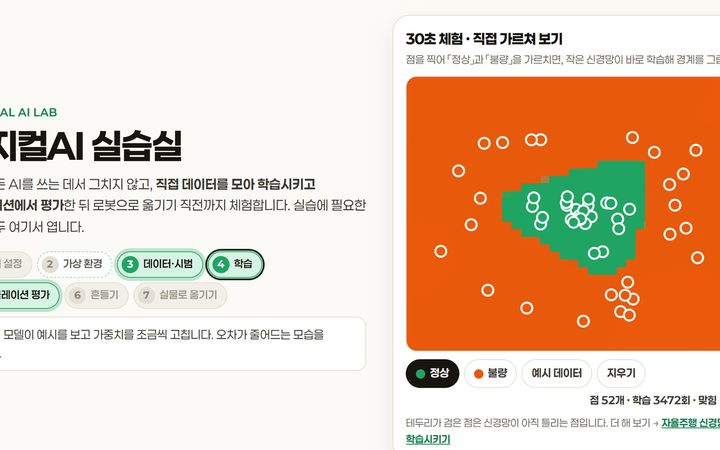
직접 학습30초 체험 · 정상과 불량 가르치기
실습실 첫 화면에서 점을 찍어 「정상」과 「불량」을 가르치면 작은 신경망이 바로 학습해 경계를 그립니다.
해 볼 것 · 「예시 데이터」로 먼저 본 뒤, 정상 구역 한가운데에 불량 점 하나를 찍어 경계가 어떻게 바뀌는지 봅니다.
AUTONOMOUS DRIVING · PONYBOT
교시 순서대로 따라갑니다. 교시마다 흐름 · 실습 도구 · MakeCode 코드이 한곳에 있습니다. 덱 장 번호를 함께 적었습니다. 교안 슬라이드는 위쪽 「교안」에서 엽니다.
도입 · 피지컬 AI 살펴보기 · 실습실 체험 · 개발환경 구성 및 기초 실습
로봇이 어떻게 움직일지 누가 정하는가?
이번 교시 흐름
실습 도구 · 눌러서 엽니다

직접 학습실습실 첫 화면에서 점을 찍어 「정상」과 「불량」을 가르치면 작은 신경망이 바로 학습해 경계를 그립니다.
해 볼 것 · 「예시 데이터」로 먼저 본 뒤, 정상 구역 한가운데에 불량 점 하나를 찍어 경계가 어떻게 바뀌는지 봅니다.
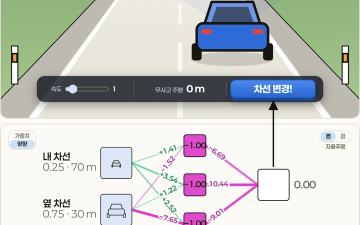
직접 학습같은 신경망을 문제 카드(지도) · 따라 하기(모방) · 시행착오(강화)로 학습시키고, 처음 보는 도로 500m로 시험합니다.
해 볼 것 · 1교시에 카드 8장에 답을 붙여 학습시키고, 5교시에 내 운전·점수로도 가르쳐 봅니다. 검증 카드로 과적합을 확인하는 방법은 7교시에 있습니다.
MakeCode 코드 · 열어서 고쳐 씁니다
마이크로비트 기초 ② · 버튼 · 빛 센서 · 확장 넣기 (포니봇 없이)
기준값은 누가, 어떻게 정하는가?
이번 교시 흐름
실습 도구 · 눌러서 엽니다
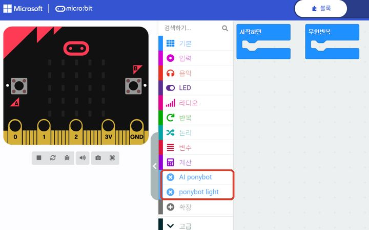
작업 도구포니봇 확장(「AI ponybot」 「ponybot light」)이 미리 들어간 MakeCode 편집기입니다. 모든 주행 코드를 여기서 만듭니다.
해 볼 것 · boundaryx.io → [EDU] → 「AI 포니봇 코딩하기(메이크코드)」로 엽니다. 링크가 막히면 makecode.microbit.org에서 [확장] → boundary-x/ai_ponybot_basic과 boundary-x/ai_ponybot_light를 차례로 넣습니다.
 AI 원리 보기
AI 원리 보기실제 초파리 뇌 연결망으로 몸을 움직입니다. 점 하나가 뉴런 하나입니다.
해 볼 것 · Walk 버튼 없이 뇌의 한 자리를 칠해 파리를 걷게 해 봅니다.
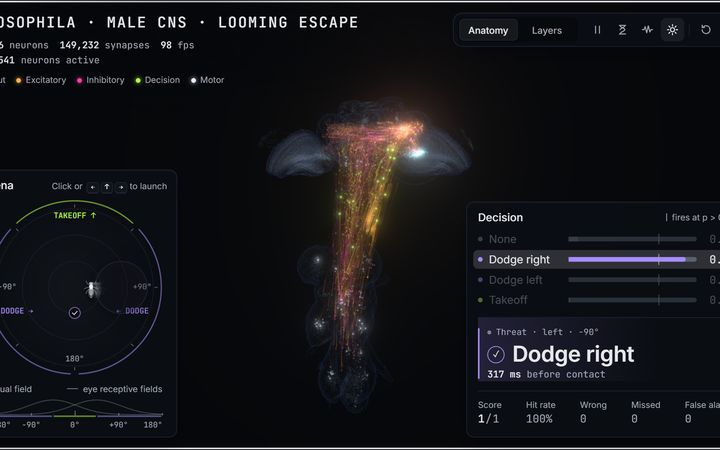
AI 원리 보기뇌도 임계값으로 피할지 말지 정합니다. 잡음을 켜면 헛반응과 놓침이 생깁니다.
해 볼 것 · 잡음 없이 한 번, 잡음을 켜고 한 번 돌려 보고, 2교시에 정한 센서 기준값과 견줍니다.
MakeCode 코드 · 열어서 고쳐 씁니다
포니봇 결합 · OLED · 로봇 제어 및 주행 실습
시간만으로 움직이면 왜 매번 다르게 갈까?
이번 교시 흐름
실습 도구 · 눌러서 엽니다
포니봇 확장(「AI ponybot」 「ponybot light」)이 미리 들어간 MakeCode 편집기입니다. 모든 주행 코드를 여기서 만듭니다.
해 볼 것 · boundaryx.io → [EDU] → 「AI 포니봇 코딩하기(메이크코드)」로 엽니다. 링크가 막히면 makecode.microbit.org에서 [확장] → boundary-x/ai_ponybot_basic과 boundary-x/ai_ponybot_light를 차례로 넣습니다.
MakeCode 코드 · 열어서 고쳐 씁니다
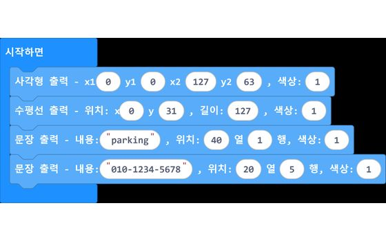
(선택) OLED 주차 번호판
테두리 사각형 · 가운데 수평선 · 위 칸 parking · 아래 칸 전화번호. 열·행 숫자로 위치를 맞춥니다
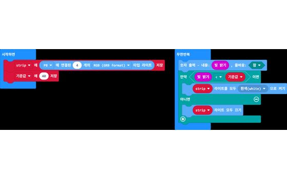
(선택) 오토라이트 · 포니봇 LED로
시작하면 기준값에 40 저장 → 빛 밝기 < 기준값이면 흰색, 아니면 끄기. 40은 우리 교실에서 다시 측정해서 정합니다
(확장) 모터 하나씩 돌리기
A 버튼 → 모터 1·2·3·4를 정회전 50으로 1초씩, LED에 번호. 어느 바퀴가 몇 번인지 확인합니다
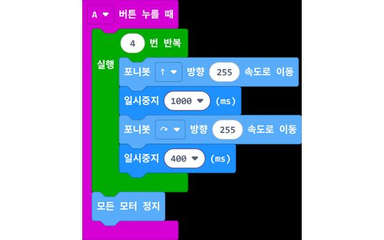
사각형 주행 · 4번 반복
↑ 1초 + 회전 400ms를 4번 반복. 회전 시간은 50ms씩 고쳐 가며 90°를 찾습니다
초음파 · 센서와 주행을 연계한 미션 · 점심 전 라디오 조종
센서를 보고 규칙대로 달리면 어디까지 될까?
이번 교시 흐름
MakeCode 코드 · 열어서 고쳐 씁니다
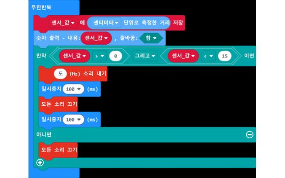
(확장) 15cm 경보 · 측정 실패 0 거르기
15cm 경보 조건을 「센서_값 > 0 그리고 < 15」로. 소리가 안 돌아와 0이 나와도 울리지 않습니다
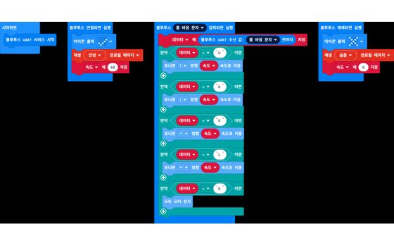
(확장) 게임패드 블루투스 수신
연결되면 속도 60, 끊기면 속도 변수만 0. 수업에 쓸 때는 끊기면 모든 모터 정지를 더합니다
모델이 분류를 배우는 원리
if 규칙에 맡겼던 판단을 모델에 넘기면 무엇이 달라지나?
이번 교시 흐름
실습 도구 · 눌러서 엽니다
같은 신경망을 문제 카드(지도) · 따라 하기(모방) · 시행착오(강화)로 학습시키고, 처음 보는 도로 500m로 시험합니다.
해 볼 것 · 1교시에 카드 8장에 답을 붙여 학습시키고, 5교시에 내 운전·점수로도 가르쳐 봅니다. 검증 카드로 과적합을 확인하는 방법은 7교시에 있습니다.
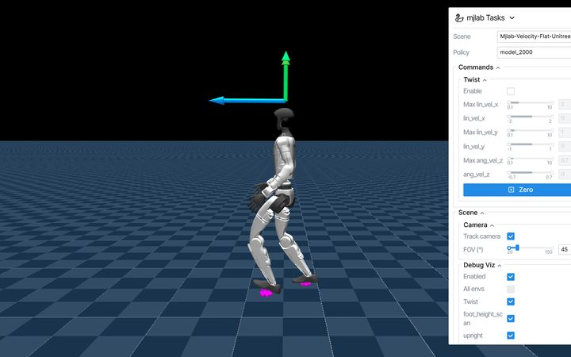
로봇 시뮬레이션실제 판매 로봇(Unitree G1)이 강화학습한 정책으로 걷습니다. 물리 시뮬레이터(MuJoCo)가 브라우저에서 돕니다.
해 볼 것 · 로봇을 마우스로 밀어 넘어뜨리고, 다시 걷게 하고, 다른 로봇으로 바꿔 봅니다.
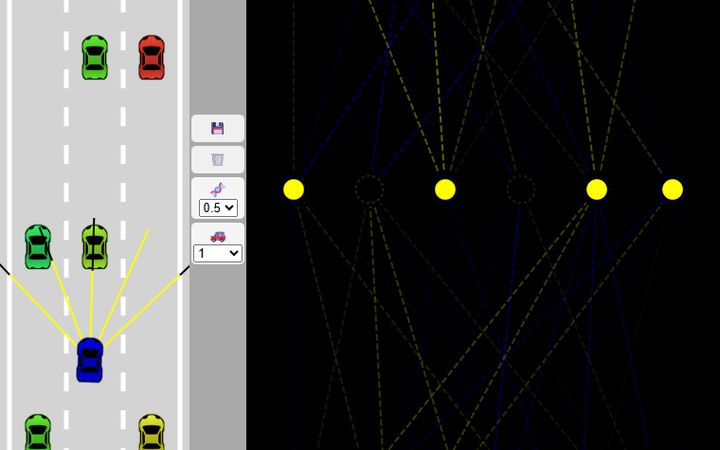
로봇 시뮬레이션광선 5개를 센서로 쓰는 차가 규칙 한 줄 없이 차선을 바꿉니다. 뇌가 조금씩 다른 후보 여러 대 중 가장 멀리 간 차를 고릅니다.
해 볼 것 · 뇌를 지우고 100대로 다시 키워, 몇 번 만에 앞차를 피하는지 봅니다.
 직접 학습
직접 학습로그인 없이 브라우저에서 손 모양 네 가지(go · stop · left · right)를 학습시키고, 블루투스로 포니봇에 명령을 보냅니다.
해 볼 것 · 클래스마다 30장 넘게 위치 · 거리 · 각도를 바꿔 담고, 짝의 손으로 시험합니다.
 AI 원리 보기
AI 원리 보기GPT-2가 다음 단어를 확률로 고르는 과정을 보여 줍니다. 1등도 100%가 아닙니다.
해 볼 것 · 문장을 넣고 1등 단어의 확률을 본 뒤, 손 모양 신뢰도와 견줍니다.
출력한 표지판을 웹캠으로 찍어 이미지 분류 모델을 만들고, 모델 주소를 micro:bit AI 웹앱에 넣습니다.
해 볼 것 · 새 이미지 프로젝트 → 표지판마다 클래스 → 학습 → [모델 내보내기]로 링크를 받습니다.
MakeCode 코드 · 열어서 고쳐 씁니다
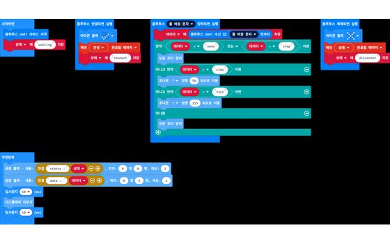
(대조) 신뢰도 처리 없는 표지판 코드
신뢰도 기준이 없는 코드입니다. 오분류가 그대로 최고 속도가 됩니다. P8 코드와 견주어 봅니다
학습한 모델을 로봇에 잇기
노트북이 내린 판단이 어떻게 바퀴까지 가나?
이번 교시 흐름
실습 도구 · 눌러서 엽니다
직접 학습로그인 없이 브라우저에서 손 모양 네 가지(go · stop · left · right)를 학습시키고, 블루투스로 포니봇에 명령을 보냅니다.
해 볼 것 · 클래스마다 30장 넘게 위치 · 거리 · 각도를 바꿔 담고, 짝의 손으로 시험합니다.
포니봇 확장(「AI ponybot」 「ponybot light」)이 미리 들어간 MakeCode 편집기입니다. 모든 주행 코드를 여기서 만듭니다.
해 볼 것 · boundaryx.io → [EDU] → 「AI 포니봇 코딩하기(메이크코드)」로 엽니다. 링크가 막히면 makecode.microbit.org에서 [확장] → boundary-x/ai_ponybot_basic과 boundary-x/ai_ponybot_light를 차례로 넣습니다.
노트북 안의 작은 모델이 웹캠 화면을 보고 문장으로 말합니다. 말하는 AI가 보는 AI로 넘어가는 장면입니다.
해 볼 것 · 강사 화면으로 봅니다. 물건을 비추면 무엇이라고 말하는지 확인합니다.
MakeCode 코드 · 열어서 고쳐 씁니다
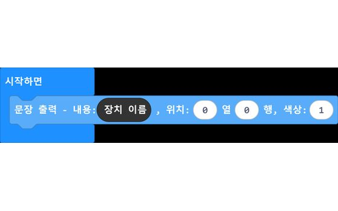
장치 이름 OLED에 띄우기
시작하면 OLED 0열 0행에 장치 이름(다섯 글자). 웹앱 연결 창에서 내 포니봇을 고를 때 씁니다
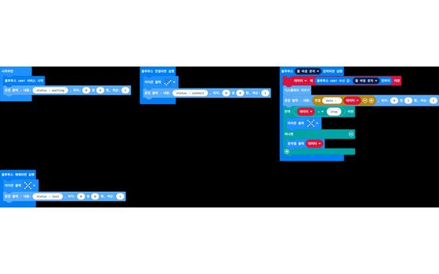
블루투스 연결 확인
모터 없이 받은 글자를 OLED에 그대로 띄웁니다. status : waiting이 뜨면 코드는 들어간 것
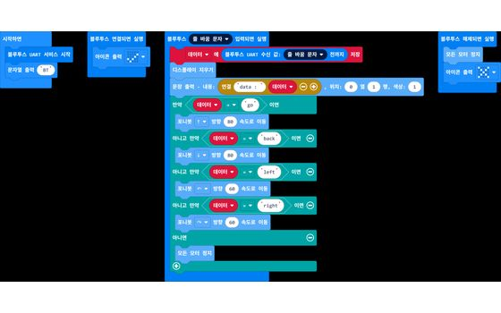
손 모양으로 달리기
go · back 80, left · right 제자리 회전 60, 그 외 정지, 연결이 끊기면 정지
모델 개선 및 다양한 인식 활용
고치기 전에 먼저 측정한다. 무엇 하나를 바꿀까?
이번 교시 흐름
실습 도구 · 눌러서 엽니다
같은 신경망을 문제 카드(지도) · 따라 하기(모방) · 시행착오(강화)로 학습시키고, 처음 보는 도로 500m로 시험합니다.
해 볼 것 · 1교시에 카드 8장에 답을 붙여 학습시키고, 5교시에 내 운전·점수로도 가르쳐 봅니다. 검증 카드로 과적합을 확인하는 방법은 7교시에 있습니다.
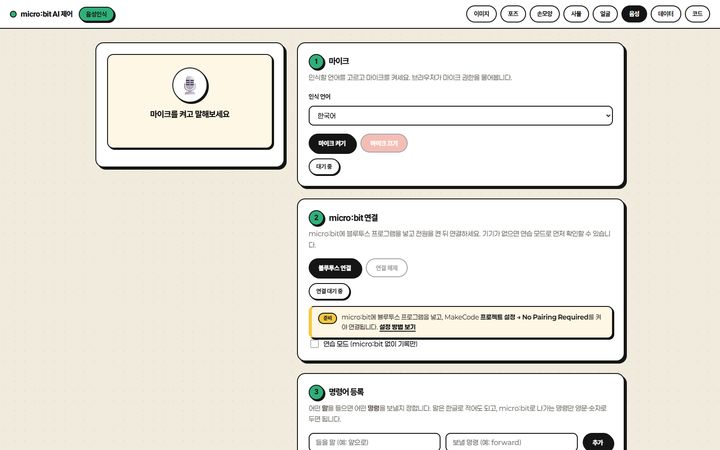
작업 도구브라우저 음성 인식(사전학습 AI)으로 들은 말을 명령 문자열로 바꿔 보냅니다.
해 볼 것 · 「1번 테이블로」 같은 말을 명령어로 등록하고, 서빙 경로 코드(P9)와 잇습니다.
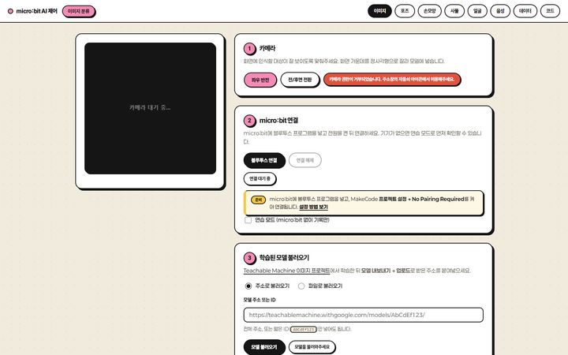
작업 도구티처블머신 표지판 모델로 slow · fast · stop을 보내 속도를 바꿉니다.
해 볼 것 · 5교시에 만든 모델 주소를 넣고, 표지판을 보여 주며 속도가 바뀌는지 봅니다.
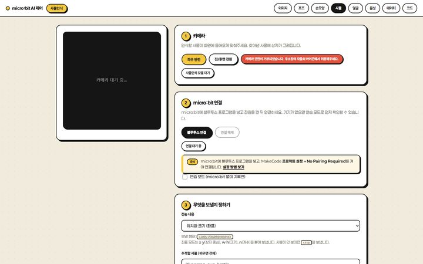
작업 도구사전학습 모델이 아는 80종 중 person만 써서 사람을 따라가는 로봇을 만듭니다.
해 볼 것 · 전송 내용을 사물 이름으로 두고, 사람이 화면 왼쪽 · 가운데 · 오른쪽에 있을 때를 나눠 봅니다.
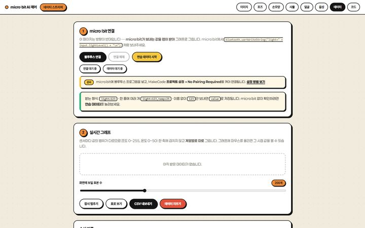
작업 도구AI 없이 포니봇 센서값(거리 · 라인 · 조도)을 웹 그래프로 봅니다.
해 볼 것 · P5 코드를 넣고, 손을 대거나 바닥을 바꿔 그래프가 어떻게 움직이는지 봅니다.
MakeCode 코드 · 열어서 고쳐 씁니다
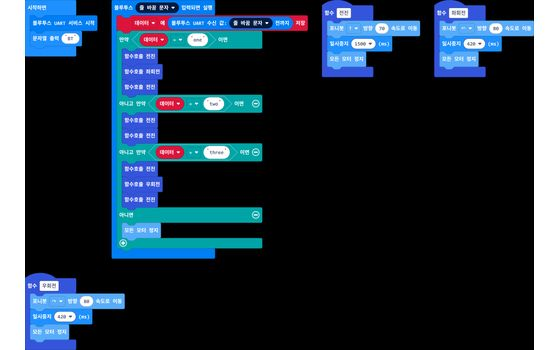
(확장) 음성 서빙 경로
one · two · three 한마디가 함수 묶음(전진 · 좌회전 · 우회전)을 부릅니다
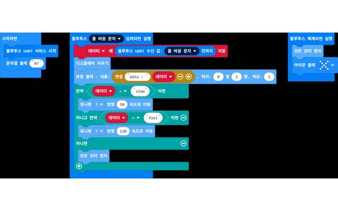
(확장) 표지판으로 속도 바꾸기
slow 50 · fast 120 · 그 외 정지 · 끊기면 정지. 오분류에 대비해 fast를 255에서 120으로 낮췄습니다
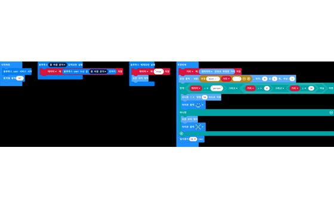
(확장) 사람 따라가기 · 30cm 정지
사물 인식 웹앱이 person을 보내면 전진 50, 그 밖이나 연결이 끊기면 정지. 30cm 안에 물체가 있으면 섭니다
학습 모델 기반 미션 및 활동 나눔
지시는 AI, 안전은 센서. 한 로봇 안에서 만나면?
이번 교시 흐름
MakeCode 코드 · 열어서 고쳐 씁니다
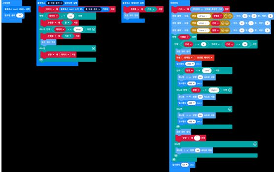
8교시 미션 · 손은 깃발, 센서는 브레이크
수신은 변수만 바꾸고 움직임은 무한 반복 안에서. go로 출발, 30cm 안에 물체가 있으면 정지